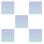

Motissimax pour tablette tactile
Bienvenue sur la page de Motissimax pour tablette tactile.
Vous trouverez ici des informations sur l'application tactile.

La version de Motissimax dédiée aux mobiles Android et iOS (iPhone & iPod touch) s'appelle MotissimoT.
Une autre version permet de jouer à deux sur une même tablette (Android et iOS) : MotissimoDuo.
Une version WebApp en ligne est disponible ici.
Partie et niveaux
Une partie de Motissimax se déroule en 12 niveaux. Dans chaque niveau, vous devez trouver un mot caché de 5 à 10 lettres en proposant des mots valides selon un dictionnaire de référence qui est l'ODS8* (noms communs, verbes conjugués).
Pour entrer un mot, touchez les lettres en bas de l'écran. Dès que toutes les lettres sont saisies, la réponse tombe aussitôt :
- Si le mot saisi est valide selon le dictionnaire, les lettres se colorisent en fonction de leur existence et leur place dans le mot à trouver :
- Si la lettre est bien placée dans le mot caché, la lettre est verte : .
- Si la lettre est mal placée dans le mot caché, la lettre est rouge :
 .
.
- Si la lettre est mal placée 2 fois dans le mot, la lettre est orange° :
- Si la lettre est inexistante dans le mot caché, la lettre est grise :
 .
.
- Si un mot saisi n'est pas valide, les lettres restent noires sur fond blanc :
 .
.
Attention :
- Si une lettre est orange et en un seul exemplaire, cela signifie qu'au moins deux exemplaires de cette lettre sont mal placés dans le mot à trouver.
- Si une lettre est orange et un deuxième exemplaire rouge, cela signifie qu'exactement trois exemplaires de cette lettre sont mal placés dans le mot à trouver.
- Si une lettre est grise et un deuxième exemplaire orange, cela signifie qu'exactement deux exemplaires de cette lettre sont mal placés dans le mot à trouver.
- Si une lettre est rouge et en un seul exemplaire dans le mot saisi et…
- Si l'option d'affichage des lettres mal placées deux fois** est activée (option ) alors cette lettre existe en un seul exemplaire dans le mot à trouver.
- Si l'option d'affichage des lettres mal placées deux fois** est désactivée (option ) alors cette lettre existe au moins en un exemplaire dans le mot à trouver.
(*) À partir de la version 2.3.
(**) Hors mode Mastermind.
Autres règles
- Au premier niveau, vous devez trouver un mot de 5 lettres en un maximum de 5 coups.
- Il n'y a pas de temps imparti donc vous avez tout votre temps !
- Selon la force de la partie, au plus deux lettres peuvent vous être données au départ.
- Si vous trouvez le mot caché avant le dernier coup vous gagnez un coup supplémentaire pour le niveau suivant jusqu'à un maximum de 5 coups supplémentaires soit un total de 10 coups maximum pour trouver le mot caché.
Score
Le score à chaque niveau est simple :
- Si vous trouvez le mot, vous gagnez un point par lettre découverte.
- Si vous avez économisé des coups, vous avez un bonus équivalent au nombre de coups économisés multiplié par le nombre de lettres découvertes.
Dans l'exemple montré au début, il fallait trouver un mot de 10 lettres ayant comme deuxième lettre un R.
Il a été trouvé en 4 coups (au lieu de 10 au maximum). Le mot TRANSIGEAT rapporte 9 points (10 lettres moins 1 lettre donnée), indiqué en vert.
Un bonus, indiqué en orange, de 6 x 9 = 54 points est accordé pour avoir économisé 6 coups. Le score total du niveau est donc de 9 + 54 = 63 points.
Force
La difficulté des parties est définie par la force allant de très facile (couleur verte) à très difficile (couleur rouge).
La difficulté ne concerne pas les mots à trouver mais le nombre de lettres données au départ. Voici le nombre de lettres du mot à trouver selon le niveau et la force :
| Niveau/Force | Très facile | Facile | Moyenne | Difficile | Très difficile |
|---|
| Niveau 1 | 5** | 5** | 5* | 5* | 5 |
|---|
| Niveau 2 | 5* | 5* | 5 | 5 | 5 |
|---|
| Niveau 3 | 6** | 6** | 6* | 6* | 6 |
|---|
| Niveau 4 | 6* | 6* | 6 | 6 | 6 |
|---|
| Niveau 5 | 7** | 7** | 7* | 7* | 7 |
|---|
| Niveau 6 | 7* | 7* | 7 | 7 | 7 |
|---|
| Niveau 7 | 8** | 8* | 8* | 8 | 8 |
|---|
| Niveau 8 | 8* | 8 | 8 | 8 | 8 |
|---|
| Niveau 9° | 9** | 9* | 9* | 9 | 9 |
|---|
| Niveau 10° | 9* | 9 | 9 | 9 | 9 |
|---|
| Niveau 11° | 10** | 10* | 10* | 10 | 10 |
|---|
| Niveau 12° | 10* | 10 | 10 | 10 | 10 |
|---|
(*) avec une lettre donnée
(**) avec deux lettres données
(°) sauf en mode Mastermind
Mode Mastermind
Ce mode spécial augmente la force d'une partie.
Dans ce mode, vous n'avez plus les lettres bien placées ou mal placées qui sont indiquées, mais seulement leur nombre.
Seules les lettres données au départ restent colorées en vert si elles sont à leur place dans le mot saisi.
Une partie est limitée à 8 niveaux dans lesquels vous devez trouver un mot de 5 à 8 lettres. Vous avez au départ 7 coups maxi pour trouver le mot (au lieu de 5 en mode normal). Comme dans le mode standard, lorsque vous économisez un coup, vous avez droit à un coup supplémentaire au niveau suivant. Vous pouvez avoir jusqu'à 3 coups supplémentaires soit 10 au total.

Après la saisie d'un mot, des marqueurs de couleurs apparaissent à sa droite :
- Le nombre de lettres bien placées est indiqué par des marqueurs verts à droite du mot saisi : .
- Le nombre de lettres mal placées est indiqué par des marqueurs rouges à droite du mot saisi : .
- Le nombre de lettres inexistantes est indiqué par des marqueurs gris à droite du mot saisi : .
Exemples :
- Pour un mot de 5 lettres, si 2 lettres sont bien placées et 1 est mal placée, on a les marqueurs suivants :
- Pour un mot de 6 lettres, si 1 lettre est bien placée et 3 sont mal placées, on a les marqueurs suivants :
- Pour un mot de 7 lettres, si 3 lettres sont bien placées et 2 sont mal placées, on a les marqueurs suivants :
- Pour un mot de 8 lettres, si aucune lettre n'est bien placée et 4 sont mal placées, on a les marqueurs suivants :
Remarques :
- La position des marqueurs colorés n'a aucun rapport avec la position des lettres.
- Le score en mode Mastermind est le score du mode classique multiplié par lui-même au niveau de chaque ligne.
Paramètres de jeu, informations et autres options
Les paramètres de jeu, infos et options diverses sont accessibles en touchant le symbole  . Il permet également de revenir à la partie en cours.
. Il permet également de revenir à la partie en cours.

L'accès se trouve en dessous de la légende des lettres et des touches de jeu.
Paramètres de jeu
Il y a trois paramètres de jeu :
- le mode Mastermind (lettre M),
- l'option de rappel automatique des lettres bien placées sur la ligne suivante (lettre R),
- la force (lettre F).
La couleur des lettres renseigne sur l'état des paramètres de jeu :
 indique que la force Très facile est activée (force par défaut).
indique que la force Très facile est activée (force par défaut).
- indique que la force Facile est activée.
- indique que la force Moyenne est activée.
- indique que la force Difficile est activée.
 indique que la force Très difficile est activée.
indique que la force Très difficile est activée.
- indique que le mode Mastermind est activé.
- indique que le mode Mastermind est désactivé (mode par défaut).
- indique que le rappel des lettres bien placées est activé (mode par défaut).
- indique que le rappel des lettres bien placées est désactivé.
- indique que l'affichage des lettres mal placées deux fois (colorées en orange) est activé (mode par défaut).
- indique que l'affichage des lettres mal placées deux fois (colorées en orange) est désactivé.
Attention :
- Lorsqu'une option est changée en touchant la lettre correspondante, le changement prend effet à la prochaine partie.
- Lorsqu'une partie est gagnée, c'est-à-dire que les niveaux sont tous réussis, la force est automatiquement augmentée.
- Lorsqu'une partie de force très difficile est gagnée dans le mode classique, le mode Mastermind est automatiquement activé en force très facile.
Informations et autres options
Les touches grises du clavier sont inopérantes.
Les touches noires correspondent à des informations ou des options :
- La touche permet d'afficher les informations à propos de Motissimax.
- La touche
 permet d'afficher une aide succinte sur la règle du jeu (affichée au lancement du jeu).
permet d'afficher une aide succinte sur la règle du jeu (affichée au lancement du jeu).
- La touche
 permet d'afficher toutes les options (cette liste).
permet d'afficher toutes les options (cette liste).
- La touche permet d'afficher l'aide sur le comptage des points.
- La touche permet d'afficher l'aide sur les niveaux et les forces.
- La touche
 permet d'afficher statistiques et records (nombre de parties et niveaux joués et gagnés + meilleur score).
permet d'afficher statistiques et records (nombre de parties et niveaux joués et gagnés + meilleur score).
- La touche
 permet de remettre à zéro les paramètres de jeu (options par défaut + remise à zéro des statistiques et des records).
permet de remettre à zéro les paramètres de jeu (options par défaut + remise à zéro des statistiques et des records).
- La touche
 permet de remettre à zéro les statistiques et les records.
permet de remettre à zéro les statistiques et les records.
Remarques :
- Les options et requièrent une confirmation en touchant une deuxième fois la lettre.
- La touche (en mode jeu) permet de recommencer une partie. Comme pour les deux options précédentes, un avertissement oblige à appuyer une deuxième fois pour confirmer.
Définition des mots
Les définitions de mots ne sont pas incluses dans le jeu. Depuis la version 1.2, les définitions sont néanmoins accessibles mais elles nécessitent une connexion internet.
Vous avez actuellement le choix entre cinq sites de définitions de mots :
(*) Centre National de Ressources Textuelles et Lexicales.
(**) Ce site ne donne que des éléments grammaticaux et non lexicaux. Par contre tous les mots du jeu y ont une page consacrée.
Il faut toucher une des lettres du mot à trouver quand celui-ci est révélé. Il y a un site différent par lettre avec un choix parmi les cinq sites ci-dessus. Si vous ne trouvez pas la définition sur un site, essayez sur les autres. Voici la répartition des sites selon les lettres dans cet exemple :

© Patrice Fouquet - Dernière mise à jour le 6 décembre 2019
Patquoi.fr - Envoyer un mail - Forum - App Store - Play Store - Amazon.fr - Motissimax - MotissimoDuo